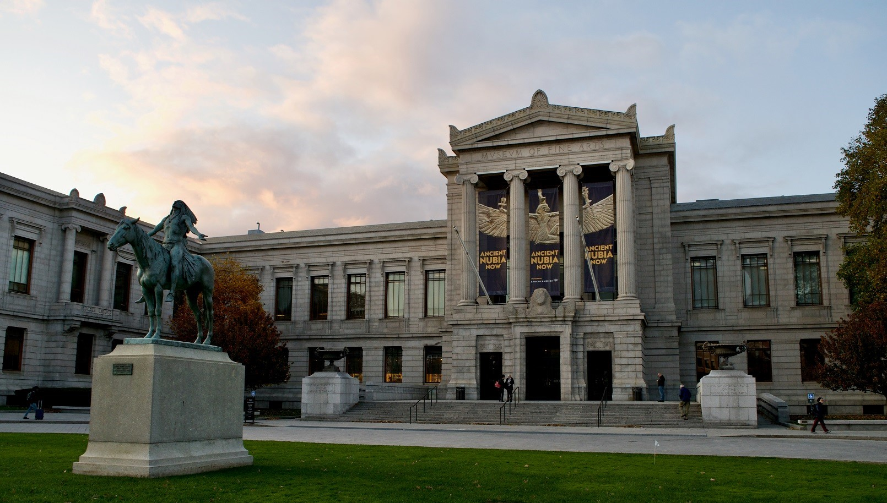
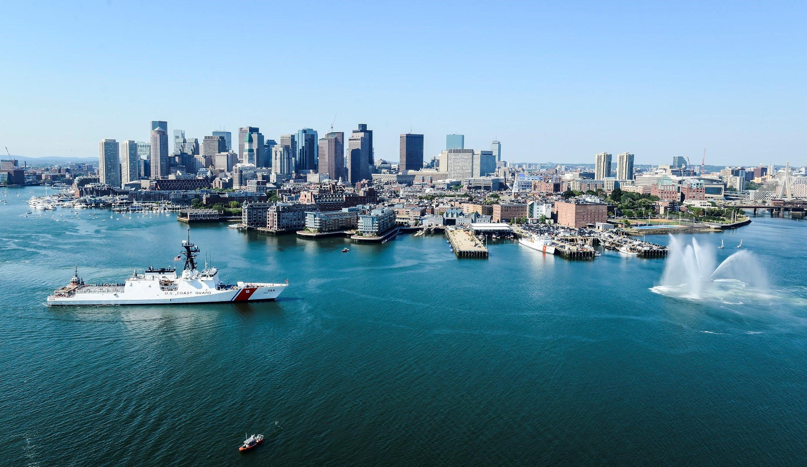
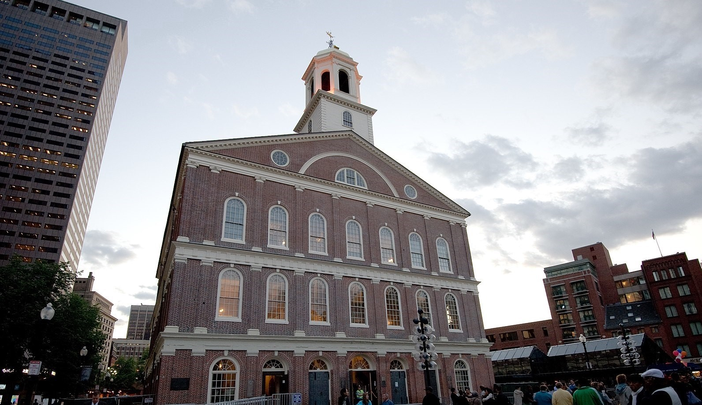

Museum of Fine Arts, Boston owns and operates an art museum. Its collections include the Americas, Europe, Asia,
Africa and the Oceania, the ancient world, contemporary arts, photography, prints and drawings, musical instruments,
textiles and fashion arts, jewelry, conservation and collections management, provenances, libraries and archives,
publications, MFA images, and other collections. The company also organizes exhibitions and programs.
It sells exhibition gifts, books, stationary and desktops, jewelry, clothing and accessories, home decors,
toys, puzzles and games, MFA logos, and other products online. Museum of Fine Arts, Boston was founded in 1870
and is based in Boston, Massachusetts.

Boston Harbor is a natural harbor and estuary of Massachusetts Bay, and is located adjacent to the city of Boston, Massachusetts.
It is home to the Port of Boston, a major shipping facility in the northeastern United States.

Faneuil Hall is a marketplace and meeting hall located near the waterfront and today's Government Center, in Boston, Massachusetts. Opened in 1743, it was the site of several speeches by Samuel Adams, James Otis, and others encouraging independence from Great Britain. It is now part of Boston National Historical Park and a well-known stop on the Freedom Trail. It is sometimes referred to as "the Cradle of Liberty". In 2008, Faneuil Hall was rated number 4 in "America's 25 Most Visited Tourist Sites" by Forbes Traveler.